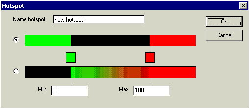

Results can be exported in the hotspot file format. See Color scales to read about how you can create a hotspot definition. See Results export on exporting results.
Hotspot definitions can be created in two ways (see figure)

The first option contains two hot sides (MIN_HOT and MAX_HOT), and a cold area in the middle (COLD).
The second option contains a cold side on the left (COLD), a transition area in the middle (percentage), and a hot side on the right (HOT).
When a hotspot is exported to a file, first the two boundary values are written:
In shown example:
MIN_VALUE 0
MAX_VALUE 100
For each node the flag (COLD/HOT or MIN_HOT/COLD/MAX_HOT) or percentage { (Value - Min_Value) / (Max_Value - Min_Value) * 100% }